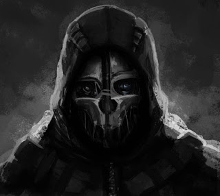

Blog Personal
Mi Bio:
Hola soy Lautaro Agustín Vallejos. Soy estudiante de programación en la UTN.
"En mis tiempos libres, me gusta diseñar usando Blender y AutoCad.
Tambien suelo indagar mucho en solucionar bugs en videojuegos por cuenta propia, como así tambien crear mods."
Mis Páginas Favoritas
Estas son 3 Páginas que utilizo Cotidianamente:
Fotos que me gustan:
